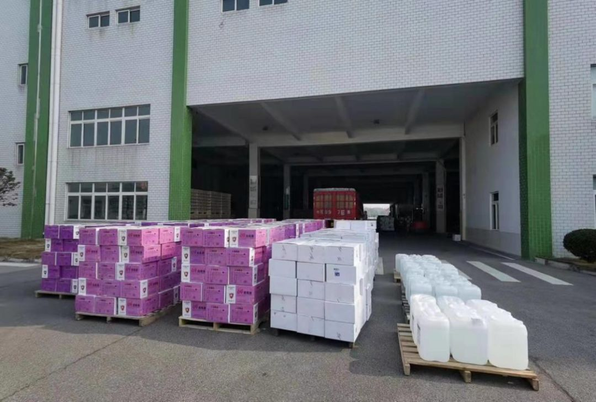
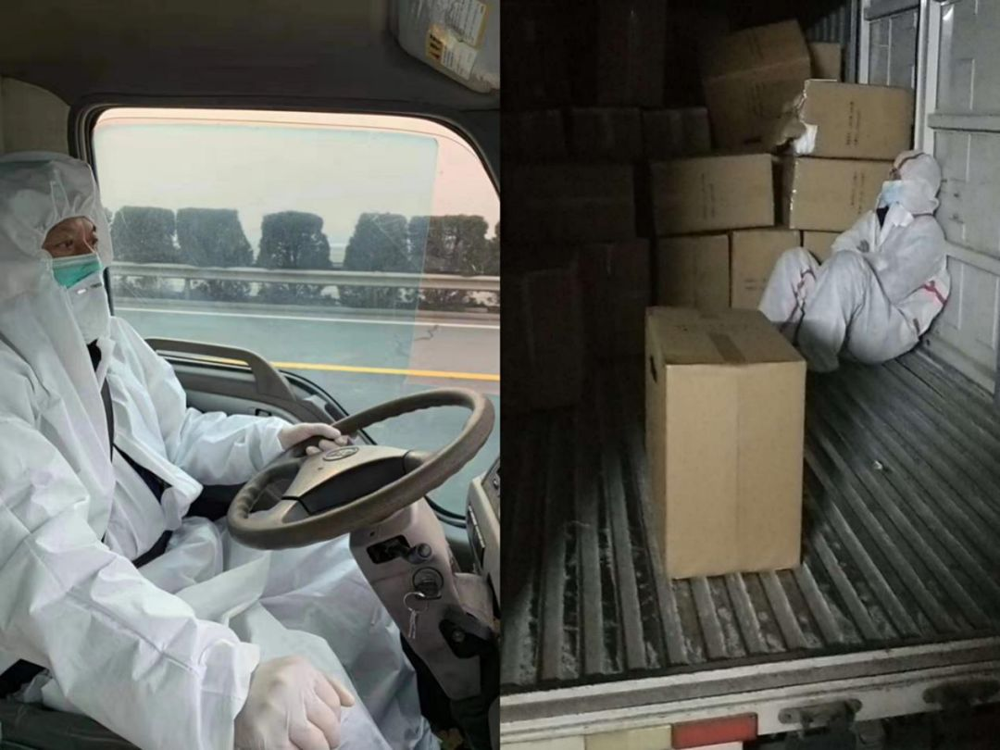

援助武汉周边地区的志愿者们
原文链接 备份链接 医院人员领取志愿者送的医疗物资。受访者供图 文 | 李晓芳 编辑 | 胡大旗 新型冠状病毒肺炎疫情扩大后，湖北省内的医院医疗物资告急。从1月23日开始，很多医院自行发布物资募捐公告。几乎同一时间，各种民间力量行动起来， …

_
上游催款、下游催货、手中资金吃紧，随着4000万贷款及后续信贷资金快速落袋，这家奋战在疫情一线的药企老板终于不再为医疗物资储备费用发愁了
_
文 |《财经》记者 张颖馨
编辑 | 袁满
“打仗是最好的团建，经历困难也是。一起吃过香，一起啃过糠，一起扛过抢，一起打过胜仗才是真正的命运共同体。军心在，精神在！“这是一名餐饮企业董事长近日在微信朋友圈的发文。
新型冠状病毒感染的肺炎（下称“新冠肺炎”）疫情蔓延下，多个行业遭受冲击，身处其中的企业更是不可避免。但《财经》记者注意到，尽管面临诸多挑战，中国的民营企业家依然在通过自己的方式积极“抗疫”。
本文的主人公是身处抗战一线的湖北某医药企业负责人，自新冠肺炎疫情发生后，他及自己的团队已向前线紧急调度医疗物资过亿元。此前，他亲自去美国采购了一批体温检测设备等物资，并通过各种途径送回湖北。
这个春节，对他来说是特别的：安静、冷漠，也备感温情。他对部分人把武汉的老百姓当作“瘟神”而忿忿不平，他为被感染新冠肺炎的员工而痛心，他也遇到了物资运送、资金流吃紧等难题，因此对“雪中送炭”的人倍感珍惜……
“一步都不能退。”电话那头的他，声音中夹杂着哽咽。他说，之所以向《财经》记者讲述这些内容，是希望更多的人关注到民营企业的真正难题和需要，更希望金融机构能把国家政策落到实处，给民营企业足够的成长空间。
以下为这名湖北医药企业主的自述，《财经》记者进行了部分删减。
三次被拒贷不改初心
从疫情爆发到现在，我平均每天就休息两个小时。不仅仅是我，我们公司的很多员工也是如此，尤其是调度员、司机，彻夜未眠运送物资。
我们的工作主要是向医院、疾控中心等，提供包括防护服、口罩、消毒水、护目镜、体温枪等在内的医疗物资。目前我们已经调度并向相关方供应了超过1亿元的医疗物资。
虽然这些是我们日常工作的一部分，但在疫情下，日常工作却变得就像“大山”压在我们身上。以往熟悉得不能再熟悉、顺利得不再顺利的环节，现在可能都成了我们抗疫工作中的“拦路虎”。
比如说物资的供应、调配、运输等工作。春节期间，所有工厂全部放假，这是中国的传统，即便你给员工加几倍的钱，也不见得就能立即开工。再者，为了防止疫情蔓延，很多地方采取了封路等措施，员工无法及时到岗，不少工厂难以恢复生产。当前，包括医疗等物资的储备、供应、运输等，都存在一定难题。我这次来美国购买医疗物资，返回时就只能先乘坐飞机至中国周边国家，再通过绿色通道送至湖北。
而比物资更让我头疼的，是如何补足资金缺口。举个例子，平常我们可能每个月就供应1亿元左右的物资，但在疫情出现后，每个月可能就需要供应3亿元左右的物资。之前拿1亿元的物资，前期我只需支付3000万元，后续7000万元慢慢付。但现在，要拿到1亿元物资，我就得把1亿元现款先交出去，而且还只能拿回5000万元的物资，因为大家都在排队等货。
货紧、上下游供应商存在一定程度的涨价、打款后排队等货、下游（医院、疾控中心等）无法及时付款……这些情况都指向同一个问题：资金。通常情况下，我们公司账面上会有5000万-6000万元的现金，目前已储备并供应了超过1.2亿元的医疗物资。但若按照未来两个月的储备供应计划，还需要3.5亿-4亿元左右的资金。
除了医院和疾控中心，我们的物资会供应到药房等地，这样基本能保证一半的资金回流，但依然还存在1.8亿-2亿元的资金缺口。怎么办？如果资金缺口补不上，就无法采购到足够多的货。更准确地说，是“抢”不到更多的货。
重压之下，只能向平常与我们有业务往来的金融机构寻求资金支持。彼时，我们立即向一家湖北省外的城市商业银行提交了贷款申请，对方最初回复他们还没有上班；上班后我们再次提交申请，对方说额度受限；于是我们重新进行申请调整，对方则建议“还是找本地银行更好”。
我从银行内部人士打听到，对方一方面是担心我们后续无法及时还款，另一方面是觉得异地放款所需要的程序和手续麻烦，不便进行。
从风险角度来说，这样的考虑我可以理解。但是三次拒绝，消耗了不少沟通时间，最关键的是资金还没能及时到位。另外，从我们2019年的经营情况来看（营收近33亿元，净利润超2亿元），还款不存在太大问题。
上游催款、下游催货、手中资金吃紧，再加上银行的拒贷，心理真的是五味杂陈。不身处这个位置，你永远无法体会这是怎样的一种压力和滋味。
30小时内获4000万元贷款
正是因为吃过“闭门羹”，才能更深刻地体会到“雪中送炭”的珍贵。
就在之前提到的那家银行第一次拒绝贷款时，我就意识到了处于非常时期，即便是平常银行眼中的“优质客户”，可能也不一定能顺利得到资金支持。于是我亲自与一家政策性银行支行行长联系，说明了当前由于医疗物资采购调度，需要大量资金支持。
这名支行行长立即将我们的情况反馈给地方分行行长，后者又反馈至省分行行长，再反馈至总行一位副行长处。随后，该银行启动了绿色通道和相应的应急方案，总行授权省分行，由省分行相关负责人立即启动相关程序。
当天，这家银行相关负责人紧急召开贷审会，展开对我们的项目调查、信贷审核、合规审查等工作，直到凌晨，大家还在通过微信视频或电话等方式推进。
过程中，因为封城导致一些材料无法及时送达，我们便只能将扫描件提交给银行。对方也考虑到我们的情况，对于一些无法立即提交的文件，同意我们后续补齐。
最终，该银行支行将4000万元发放到我们的账户中，从申请贷款到资金入账，整个过程所花费的时间不超过30小时。与平常向银行申请贷款相比，任何一个程序都没有少，但之前不用十天半个月，是无法完成的。后来我听这家银行内部的人说，这应该是该银行史上在应急事件中支持企业最快的一笔贷款。
资金一到账，我就赶紧排队“抢货”，不夸张地说，我当时都掉了眼泪。能这么快拿到这笔4000万元的信用担保贷款，除了之前这家银行对我们经营情况有一定了解外（有业务往来），确实是对方考虑到当下，越快越多的资金到位，我们才能去调度采购更多的医疗物资，救更多人的性命。

疫情发生后，紧急调度采购医疗物资。受访者供图
我很感谢这家政策性银行，在我压力最大的时候“雪中送炭”。近日，我们又向这家银行申请了一笔2000万元的贷款，也迅速得到了响应。
银行对企业的支持应该是一种使命和担当，不应只考虑到自己的业绩和利益。任何一家大企业都是从小企业发展而来。金融系统的不少政策都是很好的，但依然有很多小企业贷不到钱，最终因资金断裂而倒下。这其中肯定有不少是经营不善引起，但是对于那些有发展潜力的企业，银行应该多一分支持和帮助。在经济下行的环境中，银行的钱不能躺着“睡觉”。
值得庆幸的是，疫情之下，国家监管部门也在通过出台相关政策加大对疫情防控相关重点企业，甚至是对受疫情影响的其他行业里中小企业的扶持。截至目前，我们已经得到了来自中国农业发展银行、武汉农商行、交通银行和光大银行的贷款支持。至少最近两个月的医疗物资储备所需费用，我们是充足的。
经历过这些，再来看金融机构对企业的支持，我只有一个建议，就是“落到实处”。落实，就是不要来虚的落实，不说虚话，也不说套话，你落实就行，真正的去帮助企业。比如新增贷款、延期、降息、不抽贷断贷等等，只要能落到实处，很多好的企业都死不了。再好的政策，一旦不落到实处，即便是经营没问题的企业，都可能会死掉。
一句话，政府拿出政策，银行则得拿出实实在在到位的力度。
“舍小家为大家”
物质上的压力有所缓解，但是精神上的压力也着实不小。中国今年的春节极其不平凡，它是安静的，但同时也是冷漠的。
说“安静”，春节本是走亲访友的时候，如今大家却因为疫情被“隔离”在家。安静之中，它又是冷漠的。在国外，其他国家的人会用异样的眼神或措施对待中国人，比如他们看到中国人，便会赶紧捂住鼻子；我去美国入关时，就被一遍又一遍地审查。而在国内，不少人则把从湖北来的人当作“瘟神”，唯恐避之不及；我们的调度员在连夜进行跨省调度时，忍受着饥饿和冷眼……理性地思考，湖北的老百姓也是“受害者”，他们没有错，不应该遭受“特殊”对待。
还有人说，现在所有行业都不行，唯医药行业独好。说句心里话，无论是有疫情，还是没有疫情，医药行业都不会差。但如果在疫情出现的时候，我们一门心思去赚钱，赚黑心钱，肯定可以实现暴利。但我们能这样做吗？答案是否定的。即便国家没有相关规定，我们的良心也过不去。
更何况，相比起赚钱、“独好”来说，我们谁不希望将自己与病毒隔离，不去一线冒险，与家人团聚。但从春节前一天开始，我们公司的全部采购人员就没有放假，一直到今天，每天连续18小时作战。整个团队40余人，坚持“抗疫”。

工作人员连夜未休，向一线运送医疗物资。受访者供图
他们冒着最易被感染的危险，他们极度劳累，他们家里有小孩住院，老人在病中，小区被封闭。他们不谈任何条件，保证随叫随到，接受任务、执行命令，“舍小家为大家”。
即便做好了相关防护，依然有两名调度员被感染：其中一个病情危重，在医院治疗；另外一个在家中自我隔离，服药治疗。
我心里特别不好受，本可以让全部员工停止工作，回家“隔离”病毒，但我不能。我们不是什么伟大的人，在自己的国家、家乡遇到困难的时候，即便我们做的事是沧海一粟，但也要负重前行，不能往后退一步。
再寒冷的冬天总会过去，再迟到的春天终将到来。既然遭遇磨难，除了勇敢面对，我们别无选择。但只要全国人民上下齐心，疫情结束指日可待。届时，武汉还是那个武汉，但中国人却连接得更加紧密。
春天，已经来了……

▲点击图片查看更多疫情报道
责编 | 蒋丽 lijiang@caijing.com.cn
本文为《财经》杂志原创文章，未经授权不得转载或建立镜像。如需转载，请在文末留言申请并获取授权。
原文链接 备份链接 医院人员领取志愿者送的医疗物资。受访者供图 文 | 李晓芳 编辑 | 胡大旗 新型冠状病毒肺炎疫情扩大后，湖北省内的医院医疗物资告急。从1月23日开始，很多医院自行发布物资募捐公告。几乎同一时间，各种民间力量行动起来， …
原文链接 备份链接 涂俊南（大家喜欢叫他小涂，乐队 “丢莱卡” 的主唱）的捐助日志在大年三十那天晚上出现在朋友圈。如往年，他没回去跟家里人过春节，独自留在北京。他原本计划三月份回去南昌陪陪父母，因为疫情爆发，今年大概是回不去了。 一个人在 …
原文链接 备份链接 非常时期，武汉成了全国人民挂念、祈福的城市。封城后，武汉人民的真实生活是什么样？ 正和岛自1月26日起特别推出《叶青：我在武汉疫区的第N天》专栏。叶青是一位定居武汉40年的市民，也是一名学者和官员。接下来的一段时间，他 …
原文链接 备份链接 李克胜在武汉。图片来源：受访者供图 口述 | 李克胜 整理 | 汪畅 44岁的上海货车司机李克胜，义务承揽运送医疗物资前往武汉的工作，带着7桶泡面，独自踏上千里之路。 返沪后，他马不停蹄，再次踏上赴汉之旅。 他曾接到妻 …
原文链接 备份链接 作者：芳野行脚 坐标：四川 职业：媒体人 1 上午，我用稀释过的84消毒液，将戴了两天的一次性医用防护口罩里外喷了一遍，晾在通风处，下午出门上班还可以对付着用用。顺便把马桶、地漏、外衣、门把手也喷了一遍，连外出穿的鞋的 …